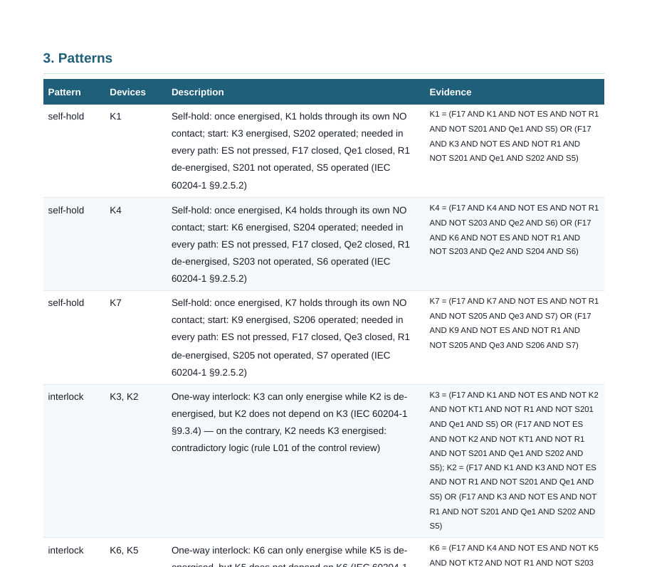
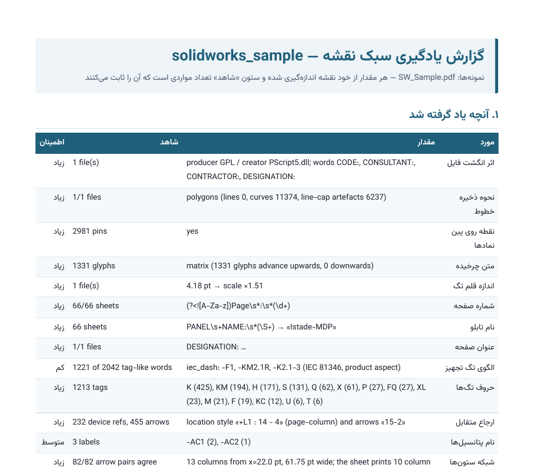

What it produces
| Output | Content |
|---|---|
| Fuse list (PDF + Excel) | breaker / fuse, rating, consumer, supply path, phase |
| Drawing review | 40 rules — IEC 60364, IEC 60898 / 60947, IEC 61082 |
| Control-circuit review | coils, contacts, interlocks, open wires, cross-reference errors |
| Control-circuit logic | condition of every coil and lamp from the wiring, patterns with evidence, scenario per sheet |
| Power calculations | IEC 60909 short circuit, IEC 60364-4-41 fault loop, voltage drop, PF correction |
| Single-line diagram | per panel and per project, switchboard house style |
| Device labels | one label per device, ready to print |
Examples

Fuse list of a generator-controller panel read through a learned drawing style — supply and consumer of every fuse, including the controller terminals it feeds.

Control logic read from the wiring: what energises each relay, e.g. R01 = NOT ES1 AND UCB:3/4.

Patterns with evidence on three star-delta starters: self-hold, interlocks, emergency-stop chain.

Control-circuit review: verdict, findings by rule, every finding with page and column.

Learning a new drawing style from one sample: each value with the evidence behind it.
Sample reports (PDF)
| Report | File |
|---|---|
| Control-panel fuse list (learned drawing style) | |
| Control-circuit review | |
| Control-circuit logic — generator controller panel | |
| Control-circuit logic — three star-delta starters | |
| Style-learning report |
Try it on your drawing
Send a vector PDF (not a scan) to y59933210@gmail.com. I run the agent offline on my own machine, return the outputs and delete the drawing afterwards. An NDA is fine.
Questions about the agent? Open a Discussion on this repository — please don't attach drawing files there, email them instead.